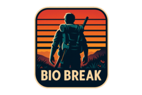
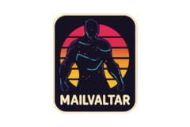

Stargrace shares the impact of Legion Remix on gold-making strategies and the market's ebb and flow in the long game.

Syp appreciates LOTRO's thoughtful map reuse, offering a tranquil return to Gondor with a fresh sense of discovery.


Mailvaltar unveils the thrill of exploration and adventure found in Dune: Awakening's sprawling and hazardous terrain.


Tobold ponders whether it's intentions or outcomes that define true morality in a world driven by social perception.
Bruce Schneier dives into the chilling expansion of social media surveillance, fueled by the Trump administration's policies.
Scopique recaps a digital CitizenCon full of progress updates and a glimpse into Star Citizen's exciting 2026 plans.
Remy Porter unearths a legacy debugging relic from the 90s that's outlived any known source control history.